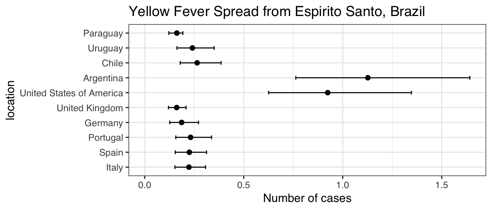
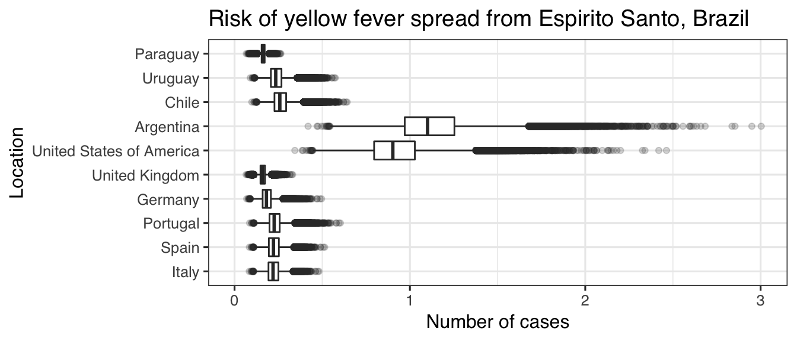
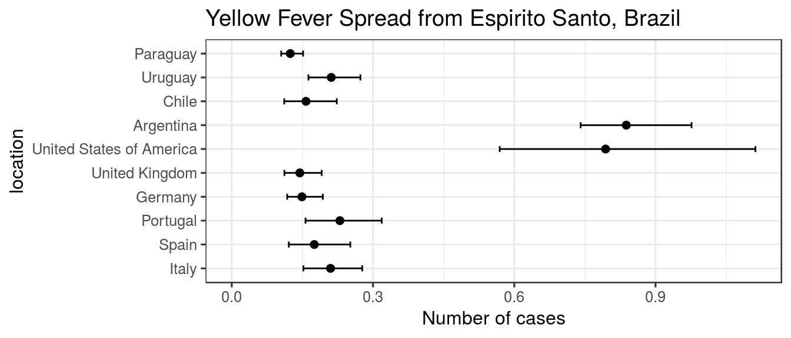
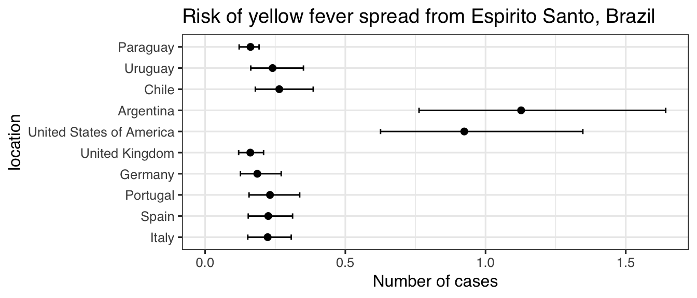
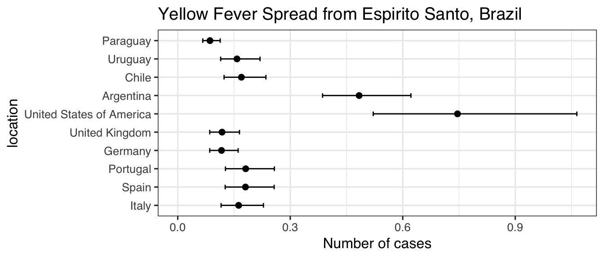

epiflows-class.RmdEpiflows can be constructed from two data frames:
The metadata in locations such as population size, duration of stay in a given location, date of first and last cases, etc. can be useful in estimating the risk of spread, but not everyone will code their data with identical column names. To facilitate their use in the function estimate_risk_spread(), the epiflows object stores a dictionary of variables in a place called $vars. You can see what variables are stored by default and add varaibles using the global_vars() function:
library("epiflows")
#> epiflows is loaded with the following global variables in `global_vars()`:
#> coordinates, pop_size, duration_stay, first_date, last_date, num_cases
global_vars()
#> [1] "coordinates" "pop_size" "duration_stay" "first_date"
#> [5] "last_date" "num_cases"When we create our object, we will use these as arguments to tell epiflows which varaibles in our data frame are important.
We have two such data frames containing data from a Yellow Fever outbreak in Brazil (Dorigatti et al., 2017). We will load these examples into our session:
library("epiflows")
data("YF_flows")
data("YF_locations")
head(YF_flows)
#> from to n
#> 1 Espirito Santo Italy 2827.572
#> 2 Minas Gerais Italy 15714.103
#> 3 Rio de Janeiro Italy 8163.938
#> 4 Sao Paulo Italy 34038.681
#> 5 Southeast Brazil Italy 76281.763
#> 6 Espirito Santo Spain 3270.500
YF_locations
#> location_code location_population num_cases_time_window
#> 1 Espirito Santo 3973697 2600
#> 2 Minas Gerais 20997560 4870
#> 3 Rio de Janeiro 16635996 170
#> 4 Sao Paulo 44749699 200
#> 5 Southeast Brazil 86356952 7840
#> 6 Argentina NA NA
#> 7 Chile NA NA
#> 8 Germany NA NA
#> 9 Italy NA NA
#> 10 Paraguay NA NA
#> 11 Portugal NA NA
#> 12 Spain NA NA
#> 13 United Kingdom NA NA
#> 14 United States of America NA NA
#> 15 Uruguay NA NA
#> first_date_cases last_date_cases length_of_stay
#> 1 2017-01-04 2017-04-30 NA
#> 2 2016-12-19 2017-04-20 NA
#> 3 2017-02-19 2017-05-10 NA
#> 4 2016-12-17 2017-04-20 NA
#> 5 2016-12-17 2017-05-10 NA
#> 6 <NA> <NA> 10.9
#> 7 <NA> <NA> 10.3
#> 8 <NA> <NA> 22.3
#> 9 <NA> <NA> 30.1
#> 10 <NA> <NA> 7.3
#> 11 <NA> <NA> 27.2
#> 12 <NA> <NA> 27.2
#> 13 <NA> <NA> 19.5
#> 14 <NA> <NA> 18.5
#> 15 <NA> <NA> 8.0We want to use these data to estimate the risk of spread to other locations. This can be done with the procedure implemented in the estimate_risk_spread() function, which can take an epiflows object.
With these data frames, we can construct the epiflows object using the make_epiflows() function. Note that this assumes that the required columns (id, from, to, and n) are in the correct order. If they aren’t we can specify their locations with the options in make_epiflows(). Type help("make_epiflows") for more details.
ef <- make_epiflows(flows = YF_flows,
locations = YF_locations,
pop_size = "location_population",
duration_stay = "length_of_stay",
num_cases = "num_cases_time_window",
first_date = "first_date_cases",
last_date = "last_date_cases"
)
print(ef)
#>
#> /// Epidemiological Flows //
#>
#> // class: epiflows, epicontacts
#> // 15 locations; 100 flows; directed
#> // optional variables: pop_size, duration_stay, num_cases, first_date, last_date
#>
#> // locations
#>
#> # A tibble: 15 x 6
#> id location_popula… num_cases_time_… first_date_cases last_date_cases
#> * <chr> <dbl> <dbl> <fct> <fct>
#> 1 Espi… 3973697 2600 2017-01-04 2017-04-30
#> 2 Mina… 20997560 4870 2016-12-19 2017-04-20
#> 3 Rio … 16635996 170 2017-02-19 2017-05-10
#> 4 Sao … 44749699 200 2016-12-17 2017-04-20
#> 5 Sout… 86356952 7840 2016-12-17 2017-05-10
#> 6 Arge… NA NA <NA> <NA>
#> 7 Chile NA NA <NA> <NA>
#> 8 Germ… NA NA <NA> <NA>
#> 9 Italy NA NA <NA> <NA>
#> 10 Para… NA NA <NA> <NA>
#> 11 Port… NA NA <NA> <NA>
#> 12 Spain NA NA <NA> <NA>
#> 13 Unit… NA NA <NA> <NA>
#> 14 Unit… NA NA <NA> <NA>
#> 15 Urug… NA NA <NA> <NA>
#> # ... with 1 more variable: length_of_stay <dbl>
#>
#> // flows
#>
#> # A tibble: 100 x 3
#> from to n
#> <chr> <chr> <dbl>
#> 1 Espirito Santo Italy 2828.
#> 2 Minas Gerais Italy 15714.
#> 3 Rio de Janeiro Italy 8164.
#> 4 Sao Paulo Italy 34039.
#> 5 Southeast Brazil Italy 76282.
#> 6 Espirito Santo Spain 3270.
#> 7 Minas Gerais Spain 18176.
#> 8 Rio de Janeiro Spain 9443.
#> 9 Sao Paulo Spain 39371.
#> 10 Southeast Brazil Spain 88231.
#> # ... with 90 more rowsNow we can use this with esitmate_risk_spread()
incubation <- function(n) {
rlnorm(n, 1.46, 0.35)
}
infectious <- function(n) {
rnorm(n, 4.5, 1.5/1.96)
}
set.seed(2017-07-25)
res <- estimate_risk_spread(ef,
location_code = "Espirito Santo",
r_incubation = incubation,
r_infectious = infectious,
n_sim = 1e5)
#> Exportations done
#> Importations done
res
#> mean_cases lower_limit_95CI upper_limit_95CI
#> Italy 0.2231010 0.1521863 0.3071570
#> Spain 0.2252568 0.1538359 0.3119207
#> Portugal 0.2314011 0.1566451 0.3372611
#> Germany 0.1861744 0.1260291 0.2713440
#> United Kingdom 0.1611980 0.1195965 0.2084865
#> United States of America 0.9241416 0.6255894 1.3469106
#> Argentina 1.1268870 0.7628361 1.6424064
#> Chile 0.2644830 0.1790425 0.3854833
#> Uruguay 0.2405802 0.1628641 0.3506508
#> Paraguay 0.1618686 0.1213829 0.1924263We can use ggplot2 to visualize these data
library("ggplot2")
res$location <- factor(rownames(res), rownames(res))
ggplot(res, aes(x = mean_cases, y = location)) +
geom_point(size = 2) +
geom_errorbarh(aes(xmin = lower_limit_95CI, xmax = upper_limit_95CI), height = .25) +
theme_bw(base_size = 12, base_family = "Helvetica") +
ggtitle("Yellow Fever Spread from Espirito Santo, Brazil") +
xlab("Number of cases") +
xlim(c(0, NA))
By default, estimate_risk_spread() returns a summary of the simulations. To obtain the full simulated output, you can set return_all_simulations = TRUE:
set.seed(2017-07-25)
res <- estimate_risk_spread(ef,
location_code = "Espirito Santo",
r_incubation = incubation,
r_infectious = infectious,
n_sim = 1e5,
return_all_simulations = TRUE)
#> Exportations done
#> Importations done
head(res)
#> Italy Spain Portugal Germany United Kingdom
#> [1,] 0.1881972 0.1902371 0.1937110 0.1558506 0.1454655
#> [2,] 0.1643659 0.1661475 0.1691815 0.1361153 0.1291680
#> [3,] 0.2300272 0.2325205 0.2367666 0.1904910 0.1643677
#> [4,] 0.2479176 0.2506047 0.2551811 0.2053064 0.1724519
#> [5,] 0.2580284 0.2600902 0.2655881 0.2136794 0.1770208
#> [6,] 0.2005721 0.2027461 0.2064485 0.1660986 0.1510575
#> United States of America Argentina Chile Uruguay Paraguay
#> [1,] 0.7736187 0.9433412 0.2214082 0.2014016 0.1501050
#> [2,] 0.6756559 0.8238866 0.1933715 0.1758983 0.1310973
#> [3,] 0.9455686 1.1530148 0.2706200 0.2461665 0.1665537
#> [4,] 1.0191100 1.2426903 0.2916674 0.2653121 0.1712946
#> [5,] 1.0606723 1.2933709 0.3035624 0.2761323 0.1739739
#> [6,] 0.8244880 1.0053706 0.2359669 0.2146448 0.1587483
library("ggplot2")
ggplot(utils::stack(as.data.frame(res)), aes(x = ind, y = values)) +
geom_boxplot(outlier.alpha = 0.2) +
theme_bw(base_size = 12, base_family = "Helvetica") +
ggtitle("Yellow Fever Spread from Espirito Santo, Brazil") +
ylab("Number of cases") +
xlab("Location") +
ylim(c(0, NA)) +
coord_flip()
set_vars() to update variable keys in the objectIn some cases, it may be useful to store several vectors that can represent a single variable in the model and switch them out. These vectors can be stored as separate columns in the data frame and you can use the function set_vars() to change which column a default variable points to.
Such a case may arise if you have several different durations of stay based on the location of origin. For example, let’s imagine that this was the case for the Brazilian data. First, we’ll construct some dummy data.
data("YF_Brazil")
set.seed(5000)
short_stays <- as.data.frame(replicate(5, rpois(10, 5) + round(runif(10), 1)))
colnames(short_stays) <- c("ES", "MG", "RdJ", "SP", "SB")
rownames(short_stays) <- names(YF_Brazil$length_of_stay)
short_stays
#> ES MG RdJ SP SB
#> Italy 5.3 6.6 6.8 7.5 8.6
#> Spain 5.9 2.2 3.3 6.4 3.6
#> Portugal 3.9 4.1 3.3 10.5 9.2
#> Germany 10.6 6.5 8.1 7.8 6.8
#> United Kingdom 1.1 4.1 4.1 3.1 7.1
#> United States of America 6.6 5.3 3.0 3.4 3.5
#> Argentina 7.5 6.4 5.7 5.3 6.6
#> Chile 1.2 6.8 0.8 4.5 2.7
#> Uruguay 4.9 8.9 5.6 3.5 7.8
#> Paraguay 5.2 3.4 5.0 4.9 4.3Now, we can merge it with our original locations metadata using the location_code column to join the two together correctly:
short_stays$location_code <- rownames(short_stays)
(locations <- merge(YF_locations, short_stays, by = "location_code", all = TRUE, sort = FALSE))
#> location_code location_population num_cases_time_window
#> 1 Argentina NA NA
#> 2 Chile NA NA
#> 3 Germany NA NA
#> 4 Italy NA NA
#> 5 Paraguay NA NA
#> 6 Portugal NA NA
#> 7 Spain NA NA
#> 8 United Kingdom NA NA
#> 9 United States of America NA NA
#> 10 Uruguay NA NA
#> 11 Espirito Santo 3973697 2600
#> 12 Minas Gerais 20997560 4870
#> 13 Rio de Janeiro 16635996 170
#> 14 Sao Paulo 44749699 200
#> 15 Southeast Brazil 86356952 7840
#> first_date_cases last_date_cases length_of_stay ES MG RdJ SP SB
#> 1 <NA> <NA> 10.9 7.5 6.4 5.7 5.3 6.6
#> 2 <NA> <NA> 10.3 1.2 6.8 0.8 4.5 2.7
#> 3 <NA> <NA> 22.3 10.6 6.5 8.1 7.8 6.8
#> 4 <NA> <NA> 30.1 5.3 6.6 6.8 7.5 8.6
#> 5 <NA> <NA> 7.3 5.2 3.4 5.0 4.9 4.3
#> 6 <NA> <NA> 27.2 3.9 4.1 3.3 10.5 9.2
#> 7 <NA> <NA> 27.2 5.9 2.2 3.3 6.4 3.6
#> 8 <NA> <NA> 19.5 1.1 4.1 4.1 3.1 7.1
#> 9 <NA> <NA> 18.5 6.6 5.3 3.0 3.4 3.5
#> 10 <NA> <NA> 8.0 4.9 8.9 5.6 3.5 7.8
#> 11 2017-01-04 2017-04-30 NA NA NA NA NA NA
#> 12 2016-12-19 2017-04-20 NA NA NA NA NA NA
#> 13 2017-02-19 2017-05-10 NA NA NA NA NA NA
#> 14 2016-12-17 2017-04-20 NA NA NA NA NA NA
#> 15 2016-12-17 2017-05-10 NA NA NA NA NA NANow we can create the epiflows object like we did before, but using our added data:
ef <- make_epiflows(flows = YF_flows,
locations = locations,
pop_size = "location_population",
duration_stay = "length_of_stay",
num_cases = "num_cases_time_window",
first_date = "first_date_cases",
last_date = "last_date_cases"
)set_vars()
We can run the model the same, but now we have the option to switch out which columns from our locations data frame we want to use:
get_vars(ef)$duration_stay
#> [1] "length_of_stay"
set_vars(ef, "duration_stay") <- "ES"
get_vars(ef)$duration_stay
#> [1] "ES"
set.seed(2017-07-25)
incubation <- function(n) {
rlnorm(n, 1.46, 0.35)
}
infectious <- function(n) {
rnorm(n, 4.5, 1.5/1.96)
}
set.seed(2017-07-25)
res <- estimate_risk_spread(ef,
location_code = "Espirito Santo",
r_incubation = incubation,
r_infectious = infectious,
n_sim = 1e5)
#> Exportations done
#> Importations done
res$location <- factor(rownames(res), rownames(res))
ggplot(res, aes(x = mean_cases, y = location)) +
geom_point(size = 2) +
geom_errorbarh(aes(xmin = lower_limit_95CI, xmax = upper_limit_95CI), height = .25) +
theme_bw(base_size = 12, base_family = "Helvetica") +
ggtitle("Yellow Fever Spread from Espirito Santo, Brazil") +
xlab("Number of cases") +
xlim(c(0, NA))
Changing it back is simple:
set_vars(ef, "duration_stay") <- "length_of_stay"
set.seed(2017-07-25)
res <- estimate_risk_spread(ef,
location_code = "Espirito Santo",
r_incubation = incubation,
r_infectious = infectious,
n_sim = 1e5)
#> Exportations done
#> Importations done
res$location <- factor(rownames(res), rownames(res))
ggplot(res, aes(x = mean_cases, y = location)) +
geom_point(size = 2) +
geom_errorbarh(aes(xmin = lower_limit_95CI, xmax = upper_limit_95CI), height = .25) +
theme_bw(base_size = 12, base_family = "Helvetica") +
ggtitle("Yellow Fever Spread from Espirito Santo, Brazil") +
xlab("Number of cases") +
xlim(c(0, NA))
Or, you can specify it by adding it as an argument in the function
set.seed(2017-07-25)
res <- estimate_risk_spread(ef,
location_code = "Espirito Santo",
r_incubation = incubation,
r_infectious = infectious,
n_sim = 1e5,
avg_length_stay_days = rep(2, 10))
#> Exportations done
#> Importations done
res$location <- factor(rownames(res), rownames(res))
ggplot(res, aes(x = mean_cases, y = location)) +
geom_point(size = 2) +
geom_errorbarh(aes(xmin = lower_limit_95CI, xmax = upper_limit_95CI), height = .25) +
theme_bw(base_size = 12, base_family = "Helvetica") +
ggtitle("Yellow Fever Spread from Espirito Santo, Brazil") +
xlab("Number of cases") +
xlim(c(0, NA))
Dorigatti I, Hamlet A, Aguas R, Cattarino L, Cori A, Donnelly CA, Garske T, Imai N, Ferguson NM. International risk of yellow fever spread from the ongoing outbreak in Brazil, December 2016 to May 2017. Euro Surveill. 2017;22(28):pii=30572. DOI: 10.2807/1560-7917.ES.2017.22.28.30572